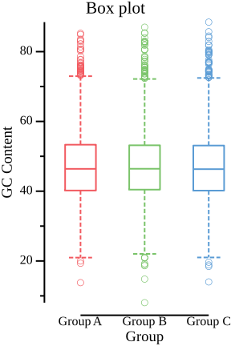

csvtk - another cross-platform, efficient, practical and pretty CSV/TSV toolkit
Documents: http://bioinf.shenwei.me/csvtk ( Usage and Tutorial)
Source code: https://github.com/shenwei356/csvtk 

Latest version: 

csvtk is convenient for rapid investigation
and also easy to integrated into analysis pipelines.
It could save you much time of writing scripts.
Features
- Cross-platform (Linux/Windows/Mac OS X/OpenBSD/FreeBSD)
- Light weight and out-of-the-box, no dependencies, no compilation, no configuration
- Fast, multiple-CPUs supported
- Practical functions supported by N subcommands
- Support STDIN and gziped input/output file, easy being used in pipe
- Most of the subcommands support unselecting fields and fuzzy fields,
e.g.
-f "-id,-name"for all fields except "id" and "name",-F -f "a.*"for all fields with prefix "a.". - Support common plots (see usage)
Subcommands
20 in total.
Information
statsummary of CSV filestat2summary of selected number fields
Format conversion
prettyconvert CSV to readable aligned tablecsv2tabconvert CSV to tabular formattab2csvconvert tabular format to CSVspace2tabconvert space delimited format to CSVtransposetranspose CSV datacsv2mdconvert CSV to markdown format
Set operations
cutselect parts of fieldsuniqunique data without sortinginterintersection of multiple filesgrepgrep data by selected fields with patterns/regular expressionsfilterfilter data by values of selected fields with math expressionjoinjoin multiple CSV files by selected fields
Edit
renamerename column namesrename2rename column names by regular expressionreplacereplace data of selected fields by regular expressionmutatecreate new columns from selected fields by regular expression
Ordering
sortsort by selected fields
Ploting
plotsee usageplot histhistogramplot boxboxplotplot lineline plot and scatter plot
Installation
csvtk is implemented in Go programming language,
executable binary files for most popular operating systems are freely available
in release page.
Just download compressed
executable file of your operating system, and uncompress it with tar -zxvf *.tar.gz command.
You can add the directory of the executable file to environment variable
PATH, so you can run csvtk anywhere.
-
For windows, the simplest way is copy it to
C:\WINDOWS\system32. -
For Linux, type:
chmod a+x /PATH/OF/CSVTK/csvtk echo export PATH=\$PATH:/PATH/OF/CSVTK >> ~/.bashrcor simply copy it to
/usr/local/bin
For Go developer, just one command:
go get -u github.com/shenwei356/csvtk/csvtk
Compared to csvkit
| Features | csvtk | csvkit | Note |
|---|---|---|---|
| Read Gzip | Yes | Yes | |
| Fields ranges | Yes | Yes | e.g. -f 1-4,6 |
| Unselect fileds | Yes | -- | e.g. -1 for excluding first column |
| Fuzzy fields | Yes | -- | e.g. ab* for columns with name prefix "ab" |
| Order-specific fields | Yes | Yes | it means -f 1,2 is different from -f 2,1 |
| Rename columns | Yes | -- | rename with new name(s) or from existed names |
| Sort by multiple keys | Yes | Yes | bash sort like operations |
| Sort by number | Yes | -- | e.g. -k 1:n |
| Multiple sort | Yes | -- | e.g. -k 2:r -k 1:nr |
| Pretty output | Yes | -- | convert CSV to readable aligned table |
Similar tools:
- csvkit - A suite of utilities for converting to and working with CSV, the king of tabular file formats. http://csvkit.rtfd.org/
- xsv - A fast CSV toolkit written in Rust.
- miller - Miller is like sed, awk, cut, join, and sort for name-indexed data such as CSV and tabular JSON http://johnkerl.org/miller
- tsv-utils-dlang - Command line utilities for tab-separated value files written in the D programming language.
Examples
Attention
- The CSV parser requires all the lines have same number of fields/columns. Even lines with spaces will cause error.
- By default, csvtk thinks your files have header row, if not, use "-H".
- By default, lines starting with '#' will be ignored, if the header row starts with '#', please assign "-C" another rare symbol, e.g. '$'.
- By default, csvtk handles CSV files, use "-t" for tab-delimited files.
- If " exists in tab-delimited files, use "-l".
Examples
-
Pretty result
$ csvtk pretty names.csv id first_name last_name username 11 Rob Pike rob 2 Ken Thompson ken 4 Robert Griesemer gri 1 Robert Thompson abc NA Robert Abel 123 -
Summary of selected number fields: num, sum, min, max, mean, stdev (
stat2)$ cat digitals.tsv 4 5 6 1 2 3 7 8 0 8 1,000 4 $ cat digitals.tsv | csvtk stat2 -t -H -f 1-3 field num sum min max mean stdev 1 4 20 1 8 5 3.16 2 4 1,015 2 1,000 253.75 497.51 3 4 13 0 6 3.25 2.5 -
Select fields/columns (
cut)- By index:
csvtk cut -f 1,2 - By names:
csvtk cut -f first_name,username - Unselect:
csvtk cut -f -1,-2orcsvtk cut -f -first_name - Fuzzy fields:
csvtk cut -F -f "*_name,username" - Field ranges:
csvtk cut -f 2-4for column 2,3,4 orcsvtk cut -f -3--1for discarding column 1,2,3 - All fields:
csvtk cut -F -f "*"
- By index:
-
Search by selected fields (
grep) (matched parts will be highlighted as red)- By exactly matching:
csvtk grep -f first_name -p Robert -p Rob - By regular expression:
csvtk grep -f first_name -r -p Rob - By pattern list:
csvtk grep -f first_name -P name_list.txt - Remore rows containing missing data (NA):
csvtk grep -F -f "*" -r -p "^$" -v
- By exactly matching:
-
Rename column names (
renameandrename2)- Setting new names:
csvtk rename -f A,B -n a,borcsvtk rename -f 1-3 -n a,b,c - Replacing with original names by regular express:
cat ../testdata/c.csv | ./csvtk rename2 -F -f "*" -p "(.*)" -r 'prefix_$1'for adding prefix to all column names.
- Setting new names:
-
Edit data with regular expression (
replace)- Remove Chinese charactors:
csvtk replace -F -f "*_name" -p "\p{Han}+" -r ""
- Remove Chinese charactors:
-
Create new column from selected fields by regular expression (
mutate)- In default, copy a column:
csvtk mutate -f id - Extract prefix of data as group name (get "A" from "A.1" as group name):
csvtk mutate -f sample -n group -p "^(.+?)\."
- In default, copy a column:
-
Sort by multiple keys (
sort)- By single column :
csvtk sort -k 1orcsvtk sort -k last_name - By multiple columns:
csvtk sort -k 1,2orcsvtk sort -k 1 -k 2orcsvtk sort -k last_name,age - Sort by number:
csvtk sort -k 1:norcsvtk sort -k 1:nrfor reverse number - Complex sort:
csvtk sort -k region -k age:n -k id:nr
- By single column :
-
Join multiple files by keys (
join)- All files have same key column:
csvtk join -f id file1.csv file2.csv - Files have different key columns:
csvtk join -f "username;username;name" names.csv phone.csv adress.csv -k
- All files have same key column:
-
Filter by numbers (
filter)- single field:
csvtk filter -f "id>0" - multiple fields:
csvtk filter -f "1-3>0" - using
--anyto print record if any of the field satisfy the condition:csvtk filter -f "1-3>0" --any - fuzzy fields:
csvtk filter -F -f "A*!=0"
- single field:
-
ploting
- plot histogram with data of the second column:
csvtk -t plot hist testdata/grouped_data.tsv.gz -f 2
- plot boxplot with data of the "GC Content" (third) column,
group information is the "Group" column.
csvtk -t plot box testdata/grouped_data.tsv.gz -g "Group" -f "GC Content" --width 3 - plot horiz boxplot with data of the "Length" (second) column,
group information is the "Group" column.
csvtk -t plot box testdata/grouped_data.tsv.gz -g "Group" -f "Length" --height 3 --width 5 --horiz --title "Horiz box plot"
- plot line plot with X-Y data
csvtk -t plot line testdata/xy.tsv -x X -y Y -g Group
- plot scatter plot with X-Y data
csvtk -t plot line testdata/xy.tsv -x X -y Y -g Group
- plot histogram with data of the second column:
Contact
Email me for any problem when using csvtk. shenwei356(at)gmail.com
Or create an issue to report bugs, propose new functions or ask for help.
Or leave a comment.